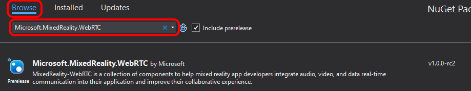
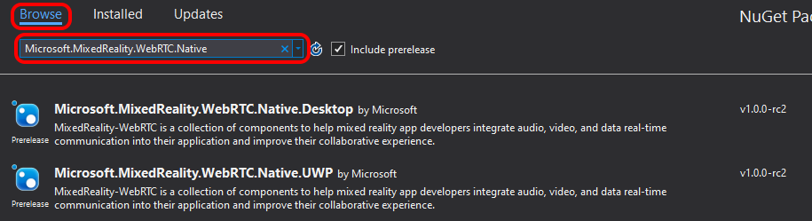

Installation
C# library
The C# library is consumed as a NuGet package by adding a dependency to that package in your C# project.
In Visual Studio 2019:
- Right-click on the C# project > Manage NuGet Packages... to open the NuGet package manager window.
- In the search bar, type "Microsoft.MixedReality.WebRTC". You may need to check the Include prerelease option.
- Select the NuGet package to install:
- For a C# Desktop project, choose
Microsoft.MixedReality.WebRTC. - For a C# UWP project, choose
Microsoft.MixedReality.WebRTC.UWP.
- For a C# Desktop project, choose
- In the right panel, choose a version and click the Install button.

This will add a dependency to the currently selected C# project. If multiple projects are using the MixedReality-WebRTC library, this process must be repeated for each project.
C++ library
The C++ library is consumed as a NuGet package by adding a dependency to that package in your C++ project. The C++ library is often referred to as the native library.
In Visual Studio 2019:
- Right-click on the C++ project > Manage NuGet Packages... to open the NuGet package manager window.
- Select the Browse tab.
- In the search bar, type "Microsoft.MixedReality.WebRTC.Native". You may need to check the Include prerelease option.
- Select the NuGet package to install:
- For a C++ Desktop project, choose
Microsoft.MixedReality.WebRTC.Native.Desktop. - For a C++ UWP project, choose
Microsoft.MixedReality.WebRTC.Native.UWP.
- For a C++ Desktop project, choose
- In the right panel, choose a version and click the Install button.

This will add a dependency to the currently selected C++ project. If multiple projects are using the MixedReality-WebRTC library, this process must be repeated for each project.
Unity integration
The Unity integration currently does not provide any automated installation process. Instead, users need to copy the relevant files into their Unity project.
Copying the sources
- Close Unity. Do not proceed further while the target project is open inside Unity.
- Clone the MixedReality-WebRTC project from GitHub using
git clone https://github.com/microsoft/MixedReality-WebRTC.git. There is no need in this case to do a recursive clone, since we are not building anything. Alternatively, you can download a ZIP archive of the source code from any of the releases on the release page. - Copy from
libs/Microsoft.MixedReality.WebRTC.Unity/Assets/the following files into theAssets/folder of the Unity project you want to import the MixedReality-WebRTC library in:- The
Microsoft.MixedReality.WebRTC.Unityfolder, which contains the main Unity scripts for the integration. - The
Microsoft.MixedReality.WebRTC.Unity.Editorfolder, which contains some helper scripts for the Editor integration. - The
Pluginsfolder, which contains all the variants of the underlying native library used by the C# library, which in turns is used by the Unity integration.
- The
At this point, do not open Unity yet. The native library DLLs are not checked in the repository, but the .meta files which configure them are. If Unity detects that those .meta files do not have a corresponding .dll file it will delete the .meta file, and later recreate some with the wrong configuration. This will result in errors at runtime. Instead, we need first to copy the native library DLLs into the Plugins/ folder.
Note
If you opened Unity already by mistake, you can close it and revert its changes with git reset, or restore the .meta files from the ZIP archive.
For more information about the .meta files and the per-platform configuration of the native library, see Importing MixedReality-WebRTC in the Unity tutorial.
Note
The repository contains some .meta files for the debug symbols databases (.pdb). The PDB are only necessary for debugging, thus the .pdb.meta files can be deleted. The .dll.meta files however need to be carefully saveguarded as explained above.
Manually download the C# NuGet packages
Download the NuGet package for the C# library from nuget.org by navigating to the package page using the links below, and selecting the Download package link in the right navigation panel.
Once downloaded, rename them by changing the .nuget extension to .zip, and extract the archives in some temporary folder of your choice.
Copying the native DLLs
Copy all the Microsoft.MixedReality.WebRTC.Native.dll variants as indicated in the table below.
| Source Folder | Destination Folder |
|---|---|
From Microsoft.MixedReality.WebRTC |
|
- runtimes/win10-x86/native |
Assets/Plugins/Win32/x86 |
- runtimes/win10-x64/native |
Assets/Plugins/Win32/x86_64 |
From Microsoft.MixedReality.WebRTC.UWP |
|
- runtimes/win10-x86/native |
Assets/Plugins/WSA/x86 |
- runtimes/win10-x64/native |
Assets/Plugins/WSA/x86_64 |
- runtimes/win10-arm/native |
Assets/Plugins/WSA/ARM |
Copying the C# library
The Unity integration also references the C# library. Copy the Microsoft.MixedReality.WebRTC.dll assembly from either the Desktop package Microsoft.MixedReality.WebRTC.nupkg or the UWP package Microsoft.MixedReality.WebRTC.UWP.nupkg; both packages have the same copy of the C# assembly, and only differ by the associated native DLLs.
In theory the managed assembly could be copied anywhere in the Assets/Plugins/ folder of the target Unity project. Practice however shows that Unity tends to stop its DLL search in the first folder that contains at least one DLL, instead of continuing to recurse into the parent folders. For this reason, we arbitrarily choose the Assets/Plugins/Win32/x86_64/ as the destination for the C# assembly.
Summary
The above steps should result in the following hierarchy on disk:
MyAwesomeUnityProject/Assets/Plugins/
- Win32.meta
+ Win32/
- x86.meta
+ x86/
- Microsoft.MixedReality.WebRTC.Native.dll
- Microsoft.MixedReality.WebRTC.Native.dll.meta
- x86_64.meta
+ x86_64/
- Microsoft.MixedReality.WebRTC.Native.dll
- Microsoft.MixedReality.WebRTC.Native.dll.meta
- Microsoft.MixedReality.WebRTC.dll
- Microsoft.MixedReality.WebRTC.dll.meta
- WSA.meta
+ WSA/
- x86.meta
+ x86/
- Microsoft.MixedReality.WebRTC.Native.dll
- Microsoft.MixedReality.WebRTC.Native.dll.meta
- x86_64.meta
+ x86_64/
- Microsoft.MixedReality.WebRTC.Native.dll
- Microsoft.MixedReality.WebRTC.Native.dll.meta
- ARM.meta
+ ARM/
- Microsoft.MixedReality.WebRTC.Native.dll
- Microsoft.MixedReality.WebRTC.Native.dll.meta